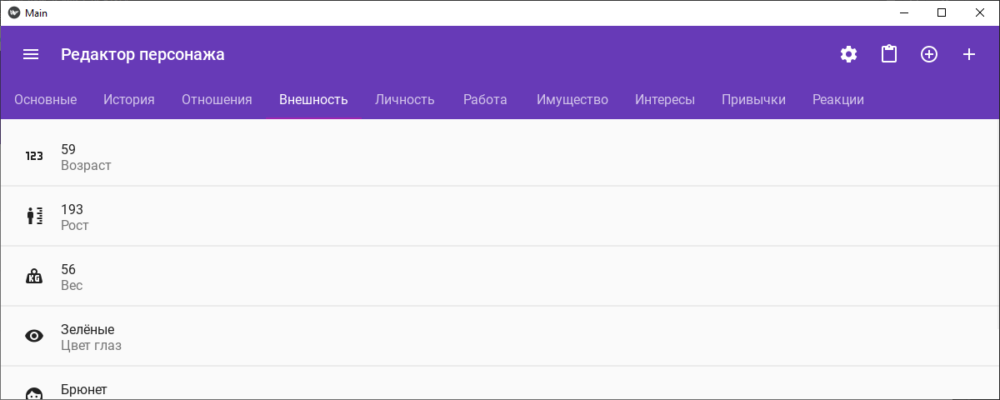

Главная
Проекты
Архив
Контакты
Список проектов
Франшиза Biker
Серия игр в консольном интерфейсе.
Biker 3
Приключенческая ролевая игра в консольном интерфейсе
Biker 2
Предшественник Biker 3
Biker 1
Попытка написать игру номер 10
Biker 0
Моя первая игра
eXtended Notes
Попытки написать удобный софт для писателей
Tropegen
Генератор случайных персонажей
XNWP
Редактор персонажей и свойств с возможностью генерации

Другие
Мои проекты, которые нельзя сгруппировать под что-то одно
Biker Quest Script
Скриптовый язык
KTX
Библиотека для консольной оболочки. Ключевая фича - конвертация изображений в консольный текст
Остальные проекты
Здесь собраны все прочие проекты, которые либо слишком маленькие, либо слишком сырые чтобы им посвящать отдельную статью